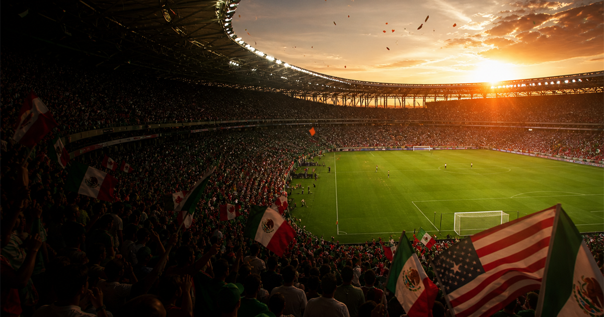
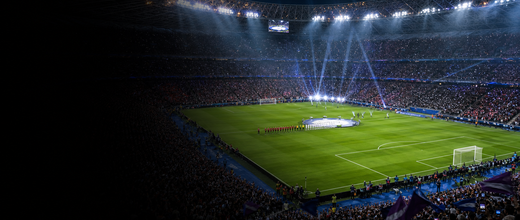

Football event guide
FIFA World Cup
The national-team tournament that turns one month into a global football argument: form, flags, tactics, travel routes and old history all on the same pitch.

More football Interested in more football?Explore more football events, venues and calendar moments.
 Uruguay hosted and won the first edition. Since then the tournament has become football's most watched national-team stage.
Uruguay hosted and won the first edition. Since then the tournament has become football's most watched national-team stage.
Teams qualify through regional competitions, enter group play, then move into elimination rounds until one champion remains.
Highest single-match scoreline: 10-1. Longest current title gap among former champions varies after each edition.
Edition guide
FIFA World Cup 2026 in Mexico City, Toronto and New York region
Switch between the current edition and recent tournaments.
Opening match scheduled for 11 June 2026.
The final is scheduled for 19 July 2026.
The current edition is spread across three host countries shown in the fact box above.
Build a route around one region before chasing individual fixtures.
Stadium-adjacent hotels will tighten quickly; reliable transport matters more than being nearest the gate.
Ticket sales phases and resale rules should be checked through official tournament channels.
Travel and accommodation are the main early-pressure items until ticket details are published.
Qualified teams are added as regional qualifying finishes.
The current edition is the first men's tournament with 48 teams.